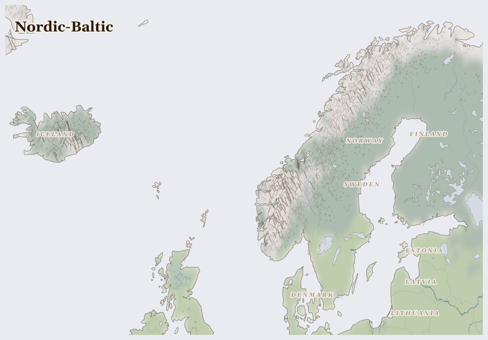

Nordic-Baltic
Sweden, Estonia, Denmark and 6 more countries
Palearctic
This is a land of deep forests, long snowy winters, and summer days when the sun barely sets. In the far north live the Sámi people, who have followed their reindeer across the snow for longer than anyone can remember.
How Life Works Here
Underneath the mountains there is iron, which becomes steel for buildings and bicycles. The forests give timber, the sea gives fish, and almost everyone has a warm home and a school. This is one of the places where good things are shared most fairly.
Sami reindeer herding communities, Herding cooperatives (siidas).
Forestry corporations (Stora Enso, UPM, SCA), Forest-dependent rural communities.
Small-scale coastal fishers (declining), Industrial trawler fleets.
What Is Happening
There is no war here, and nobody is going hungry. The hard question in this place is about fairness: the reindeer need wide, quiet lands for their winter journeys, but new mines and giant windmills are being built right across their paths. The Sámi herders are asking: who gets to decide what happens to the land? Even a peaceful place has questions like this to work out.
Something Wonderful
On dark winter nights, the sky here sometimes fills with waving curtains of green and purple light — the aurora. And reindeer are one of the few animals whose eyes change colour with the seasons, so they can see in the long winter dark.
Let's Do Something Together
Follow Water on a Map
Find a river on your map or globe. Trace it with your finger from where it starts high up in the mountains all the way down to where it meets the sea. Water travels a very long way! Families who live near this river use it to drink, to wash, and to grow food.
- world map or globe
- blue crayon or marker
For grown-ups
Rivers in this region are contested resources — upstream dams and irrigation diversions reduce flow to downstream communities who depend on seasonal flooding for agriculture.
Let Us Pray Together
Thank you, God, for water. Help the families who need clean water today.
Leader: We pray for Estonia. For Estonia, where multiple pressures are interacting and the situation is escalating.
All: Lord, hear our prayer.
Leader: We pray for the helpers. For humanitarian workers and missionaries in Nordic-Baltic.
All: Lord, hear our prayer.
Leader: We pray for seeds of hope. For every act of resistance and care in Nordic-Baltic.
All: Lord, hear our prayer.
O praise the Lord, all you nations; praise him, all you peoples. For great is his steadfast love towards us, and the faithfulness of the Lord endures for ever. Alleluia.
Collect
Lord of all power and might, the author and giver of all good things: graft in our hearts the love of your name, increase in us true religion, nourish us with all goodness, and of your great mercy keep us in the same; through Jesus Christ your Son our Lord, who is alive and reigns with you, in the unity of the Holy Spirit, one God, now and for ever.
Amen.
Talk About It
Is there something your family has plenty of that another family might need? How does it feel to share something you love?
One Thing We Can Do
Learn to say thank you the way Sámi children in the north do: "giitu" (say it GEE-too). Use it once today, and when you do, thank God for warm homes — yours and theirs.